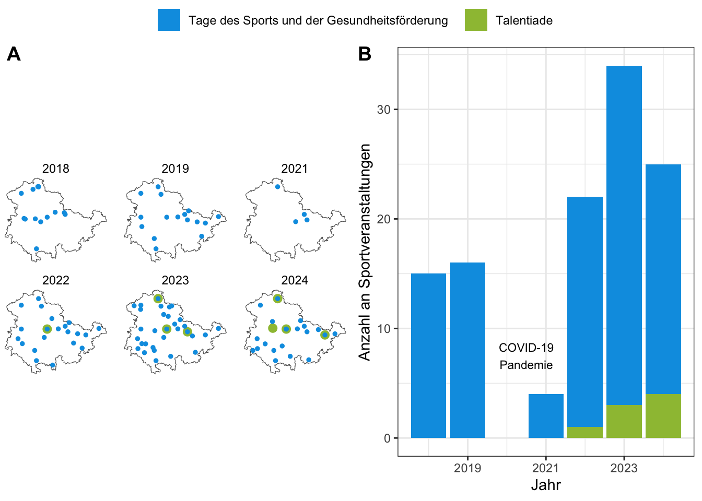

Die folgende Seite fasst zusammen, wann und wo Sport-Veranstaltungen “Talentiade” und “Tage des Sports und der Gesudheitsförderung” im Rahmen des Programms “Bewegte Kinder = Gesündere Kinder” in Thüringen stattfanden.
Räumliche Verteilung und Entwicklung der Veranstaltungen
d$Type <-trimws(d$Type)p2<-ggplot(d,aes(x=Year,fill=Type,group=Type))+geom_bar()+annotate("text", x =2020.5, y =7.5, label ="COVID-19\nPandemie",size=3)+scale_fill_manual(values=c("#009ee3","#9dc041"))+xlab("Jahr")+ylab("Anzahl an Sportveranstaltungen")+theme_bw()+theme(legend.position ="top")+guides(fill=guide_legend(title=""))ggpubr::ggarrange(p1,p2,nrow=1,common.legend =TRUE,labels="AUTO")

(A) Räumliche Verteilung und (B) Anzahl der Sport-Veranstaltungen seit dem Jahr 2018
New names:
Rows: 92214 Columns: 120
── Column specification
──────────────────────────────────────────────────────── Delimiter: "," chr
(60): Club, Admin, Performance_total, Sex, Child, Component, Admin_rank... dbl
(57): ...1, Ambition, Admin_rank_keyage_200_limit, Admin_rank_keyage, r... lgl
(1): Talentiade date (2): Testdate, Birthdate
ℹ Use `spec()` to retrieve the full column specification for this data. ℹ
Specify the column types or set `show_col_types = FALSE` to quiet this message.
• `` -> `...1`
Talentiaden sollen zukünftig einmal jährlich je Staatlichem Schulamt stattfinden. Einladungen zu den Talentiaden erhalten Kinder ggf. mit ihren ausgedruckten Auswertungen nach besonders erfolgreichem Absolvieren des Bewegungs-Checks.
Es ist nicht genau bekannt, wieviele Kinder vor dem Schuljahr 2023/2024 zu den Talentiaden eingeladen wurden, da nicht erfasst wurde, wieviele “Wildcards” (Schulen konnten begrenzt entscheiden konnten, welche Kinder zusätzlich an der Talentiade teilnehmen durften) tatsächlich an die Kinder weitergereicht wurden. Seit dem Schuljahr werden keine “Wildcards” mehr ausgegeben, wodurch die Anzahl eingeladener Kinder zu den Talentiadeveranstaltungen erfasst werden kann und den Organsiationsaufwand für die Veranstaltungen berechenbarer macht.
Die “Tage des Sports- und der Gesundheitsförderung” werden von den Kreissportbünden einmal pro Schuljahr durchgeführt. Alle Kinder im laufenden Schuljahr die Dritten Klassenstufe einer Thüringer Schule besuchen, sind eingeladen, daran teilzunehmen. Teilnehmerzahlen werden dazu nicht erfasst. Die folgende Tabelle protokolliert nur die Ort und Zeiten der Veranstaltungen der vergangenen Jahre. Durch einen Klick mit der Mouse auf einen Sportbund entfaltet sich die Gruppierung mit Informationen zu Ort und Datum. Teilnehmerzahlen zu den Tagen des Sports- und der Gesundheitsförderung werden nicht erfasst.